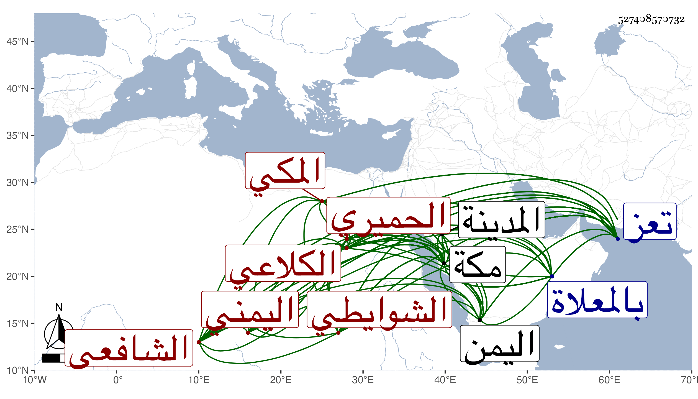

0902Sakhawi.DawLamic.ITO20230111-ara1.EIS1600.527408570732
Biography ID: 527408570732
76
أحمد بن علي بن عمر بن أحمد بن أبي بكر بن سالم الشهاب الكلاعي الحميري الشوايطي اليمني ثم المكي الشافعي والد الجمال محمد وعلي . ولد في العشر الأخير من رمضان سنة إحدى وثمانين وسبعمائة بشوايط بمعجمة ثم مهملة بلدة بقرب تعز ونشأ بها فحفظ القرآن ثم قدم تعز بعد التسعين فحفظ بها الشاطبية وتلا على الشيخ عبد الله البنبي ختمة جمع فيها بين قراءة قالون عن نافع وابن كثير وأبي عمرو بل وجمع عليه للسبع من أول القرآن إلى ويسألونك عن الأهلة ثم تلا ختمة للسبع على المقرئ عبد الرحمن بن هبة الله الملحاني ، ثم انتقل إلى مكة سنة ثلاث وثمانمائة فقطنها حتى مات وسافر منها إلى الزيارة النبوية غير مرة ولذا تردد إلى اليمن مرارا ولقي بحران من بلادها محمد بن يحيى الشارفي الهمداني شيخ الملحاني المتقدم فتلا عليه أيضا للسبع وذلك في سنة تسع وثمانمائة وكذا تلا في حال إقامته وأذنوا له في الإقراء وتفقه في المدينة بالجمال الكازروني بحث عليه من التنبيه إلى الرهن وفي مكة بالشمس الغراقي بحث عليه في التنبيه أيضا والمنهاج وسمع بمكة على الشريف عبد الرحمن الفاسي وابن صديق والمراغي والجمال بن ظهيرة والزين الطبري والولي العراقي حين قدمها وعلي بن مسعود بن علي بن عبد المعطي في آخرين وبالمدينة على المراغي أيضا والرضى أبي حامد المطري ورقية ابنة ابن مزروع وجماعة وكتب بخطه الكثير لنفسه ولغيره وأقرأ الأطفال مدة وعكف بالمسجد الحرام يقرئ ويدرس ويفيد فعم الانتفاع ، وباشر مشيخة الباسطية هناك حين أعرض عنها الشيخ عمر الشيبي بعد أن كان أحد صوفيتها وحدث سمع منه الفضلاء وممن قرأ عليه شيخنا الأمين الأقصرائي تلا عليه لأبي عمرو في بعض مجاوراته ولقيته بمكة فحملت عنه الكثير ، وكان إماما فاضلا مفننا خيرا دينا ساكنا متواضعا ذا سمت حسن ونسمة لطيفة بالجرم وانجماع وملازمة للعبادة والإقراء والطواف محبا إلى الناس قاطبة مبارك الإقراء . وقد وصفه شيخنا بالشيخ القدوة الفاضل الأوحد الفقيه . مات في صبح يوم الأربعاء رابع عشر ذي القعدة سنة ثلاث وستين بمكة ودفن بالمعلاة رحمه الله وإيانا .
